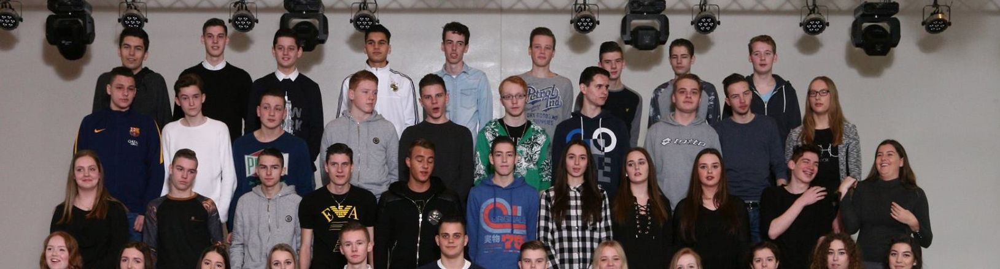
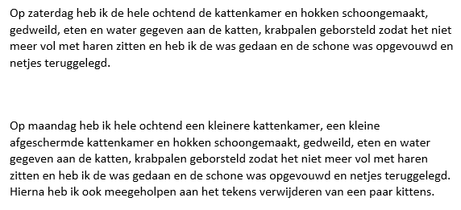
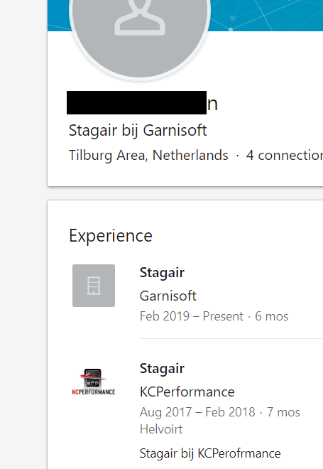
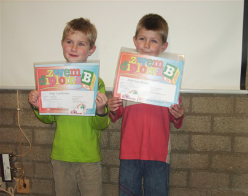
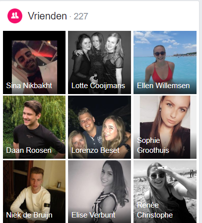
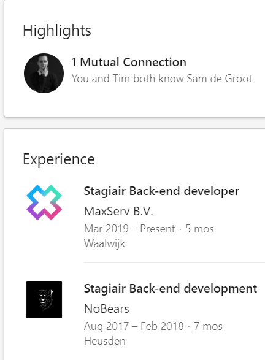

Warm - Tempo - Persoonlijks
Per leerling 2 slides
Eerste slide, wie is het? 20 sec, Het is ....
Tweede slide, kom dan snel naar voren
Felicitatie - diploma - handtekening
De laatste zal de eerste zijn...
Jordy de Wit
Knap hoor!
Quien es esto?
Guus Langelaar
Je gaat hard.
QGIS Guru en Geo specialist
"Dag Saebu,
U heeft ons beloofd om gisteravond de bestanden toe te sturen zodat wij hiermee verder konden. ... en ik hebben hiervoor een dag vrijgehouden, maar hebben nog steeds geen bestanden ontvangen...
Wij ontvangen dit gaarg zo spoedig mogelijk!"
Naiche Smeets
Aards goed!
De eerste man aller tijden en heeft ook een beroemde broer
Adam Oubelkas
Goed gedaan.
ποιος είναι αυτός;


Quinn van Doorn
Super goed.
Iemand uit een grote familie?
Daan Hoeflaken
Gefeliciteerd!
Stil - heeft veel duwtjes nodig - koppig als een echte programmeur

Eric van der Ven
Topper
Vraag hem geen Crystal report rapportage te maken

Joep Laarhoven
Kanjer!
Van de dikke en de dunne de dunne maar dan toch de andere
Het uitbreiden/aanpassen van de (pas)designer zodat deze ook etiketten met variabele informatie uit de databases kan printen, en deze nu ook als uitbreiding aan rapportage toevoegen.
Stan van den Berg
Baas.
Net geen boom van een vent

Emiel Popelier
Goed hoor.
Raak was niet raak? Mendix is dat maandverband?

Tim Kuipers
Goed bezig!
"Nog steeds 1 van de beste music vids :P"
Tijn van de berg
Oke dude.
Stille kracht - heeft gewerkt bij Jumbo Pettelaarseweg Den Bosch - St Janslyceum Den Bosch


"Dag Saebu, U heeft ons beloofd om gisteravond de bestanden toe te sturen zodat wij hiermee verder konden. ... en ik hebben hiervoor een dag vrijgehouden, maar hebben nog steeds geen bestanden ontvangen... Wij ontvangen dit gaarg zo spoedig mogelijk!"
Aards goed!